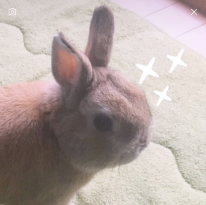

タイピングをすること、
音楽を聴くことが子供の頃から大好きです！パソコンと向き合っている時間の長さには自信があります！
| OS | MacOSなど |
|---|---|
| 資格・免許 | 色彩検定 など |
アピールできる活動内容を書きましょう。
作った作品連絡先や SNS のアカウントを書きましょう。
地元の小中一貫校に通学、中学3年生の頃からN中等部へ同時入学。
卒業後はN/S高等学校へ進学し、現在ZEN大学に在籍。
| 2025 年 | 学校法人日本財団ドワンゴ学園ZEN大学 入学 |
|---|---|
| 2022 年 | 学校法人角川ドワンゴ学園 S高等学校 入学 |